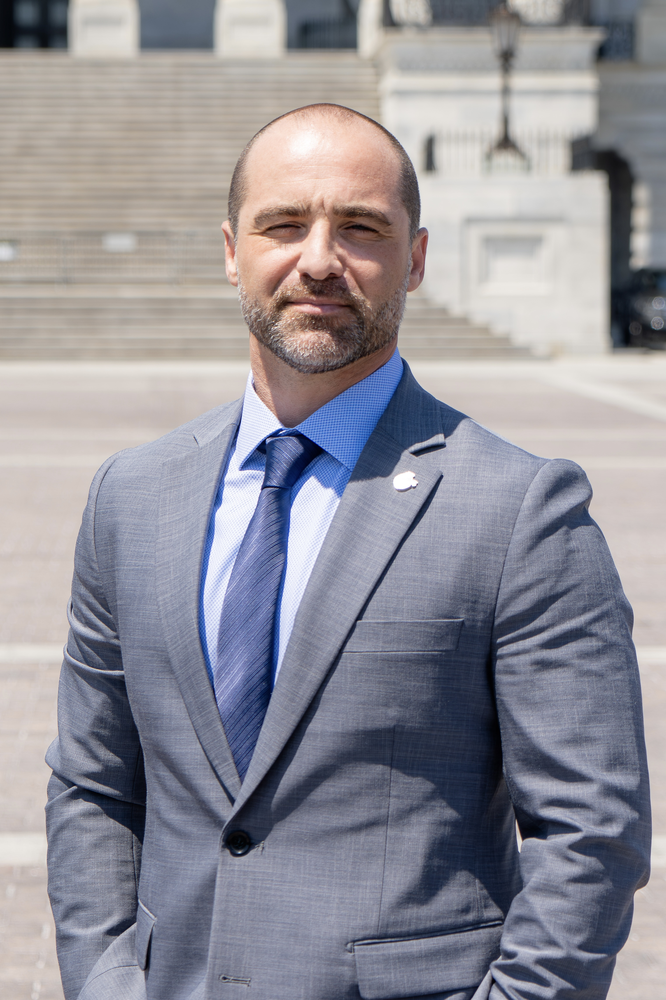
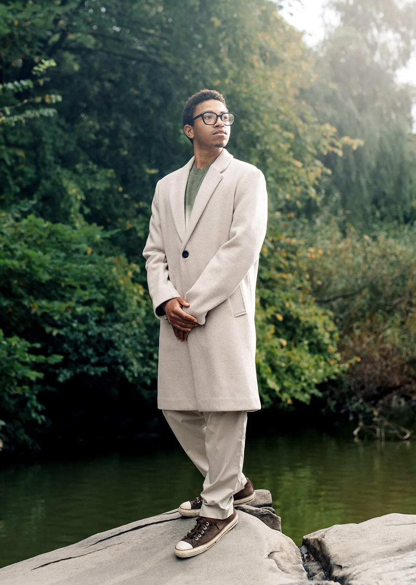

Leah Garcés
Growth and Opportunity Project
In this attention economy, the anti-factory farming movement needs our leaders to be influential in their own right. They need to be able to jump on X, Instagram, or LinkedIn and say “Everyone jump!” and have hundreds of thousands of people ask “How high?” They need to be able to push ‘post’ and instantly get the attention of reporters, legislators, fellow thought leaders, celebrities, and primed advocates. The brilliant talent already leading this work carries deep expertise and moral authority. Content creation and building influence on today’s platforms is a game that can be learned and mastered. When our leaders play the game and learn to win at scale, we will become truly competitive for farm animals on the playfields that matter most — the boardrooms, committee meeting rooms, family dinner tables, and the court of public opinion. It’s the piece that compounds the rest — turning expertise, authority, and effort into the cultural momentum and narrative dominance that can tip the scale and generate defensible wins for the long haul.
Today most of our leaders don’t have the support, the team, or the shared infrastructure to play this game at the scale needed. And while paid influencer campaigns can deliver short bursts of reach, that reach is transactional — it doesn’t compound, and it doesn’t leave our native leaders with audiences of their own.
The Resonance Network is built on a different bet: that the most trusted voices in our movement can become powerfully influential in their own right, with audiences they own and can return to. This program gives them dedicated social media managers, strategic support, and — soon — data collection, sharing, analytics, and infrastructure, so they can own the narrative and grow their influence to the scale this moment requires, building something durable as they do.


Backed by The Pollination Project, a global grantmaking foundation investing in early-stage social change.
Alexis Fox is the Co-Founder and former CEO of Lighter, where she spent more than a decade helping creators, influencers, authors, athletes, and celebrities monetize their platforms. Lighter sits at the intersection of social media, creator partnerships, audience engagement, and mission-driven entrepreneurship.
Alexis currently serves as Executive Director of The Pollination Project Foundation. She has spent more than 26 years advancing farm animal protection as an attorney, lobbyist, organizer, board member, tech entrepreneur, funder, and movement leader.
Previously, Alexis served as an Adjunct Professor of Leadership at Emerson College and founded the Massachusetts Healthy School Lunch Coalition. She currently serves on the board of Balanced and has been featured in Forbes, The Boston Globe, and other national media.
Asher is the founder of Pollution Studios and a creative force behind some of the most influential digital campaigns of the last two decades. A pioneer in mission-driven storytelling, he’s created work for hundreds of leading brands, media platforms, and nonprofits, amassing billions of views and helping partners build brands, grow audiences, and drive meaningful action at scale.
With a deep focus on cultural change, Asher co-founded the nonprofit Switch4Good, helped bring Veganuary to the U.S., played a key role in passing California’s Prop 12, and hosted the Humane League’s Vegan Prom.
He currently serves as executive director of the Youth Pro-Animal Awards and senior advisor to Youth Climate Save and the Vegan Creator Conference, helping to elevate the next generation of global changemakers.